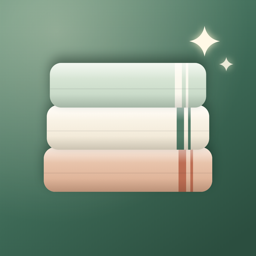

A calm cleaning schedule for your home, with filters and batteries built in. Every task comes back when it’s due, so you only see what’s ready today.
Contact · FAQ · Privacy Policy
Found a bug or have an idea? Email us. We usually reply within a few days.
I fell behind. How do I catch up?
Open Settings and tap Fresh start. Every task begins its cycle again from today. Your Journal isn’t changed.
What’s the difference between Done and “Not this time”?
Both reset the task. Done also writes it in your Journal. “Not this time” simply moves it to its next turn.
How do I change how often a task repeats?
Tap the task to edit it. Choose every so many days, weeks or months, how long it takes, and when you last did it.
How do reminders work?
Turn on Daily note in Settings and pick a time. Linen sends one quiet note, only on days when something is ready, plus a week’s notice before a filter or battery task is due. If notes don’t arrive, allow notifications for Linen in the iOS Settings app.
Where do I write my filter size?
Tap any task to edit it and use Notes. Whatever you write there shows under the task name and in the heads-up reminder.
Can I share my schedule with my family?
Not yet. Linen keeps everything on your device, with no account.
Does Linen sync between my iPhone and iPad?
Not at this time. Each device keeps its own schedule.
How do I delete a room or task?
Open the room and tap Edit to delete the room, or swipe left on a task and tap Delete.
Last updated: September 2026
Linen (“the App”) is provided by an independent developer (“we”). This policy explains how the App handles information.
We do not collect any personal information. The App has no accounts, no sign-in, no ads, no analytics and no tracking, and it does not connect to the internet.
Your rooms, tasks and Journal
Everything you enter is stored only on your device.
Notifications
If you turn on the daily note, reminders are scheduled on your device. Nothing is sent to us or to any server.
Camera, microphone and location
The App does not use the camera, the microphone or your location.
Purchase
The App is purchased through the App Store. Apple processes the payment, and we do not receive your name, email address or payment information. Please see
Apple’s Privacy Policy for details.
We do not collect, store or share any personal information from anyone, including children under 13.
You can delete rooms and tasks in the App. Deleting the App removes all of its data from your device.
We may update this policy when the App changes. Updates will be posted on this page with a new “Last updated” date.
Questions about this policy? Email us at tajimaru1209@gmail.com.